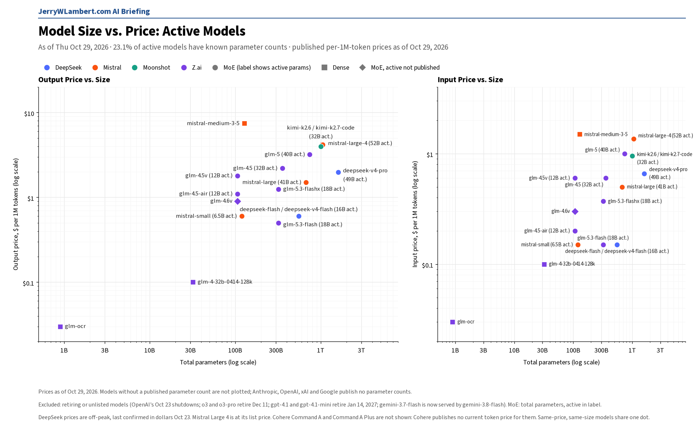
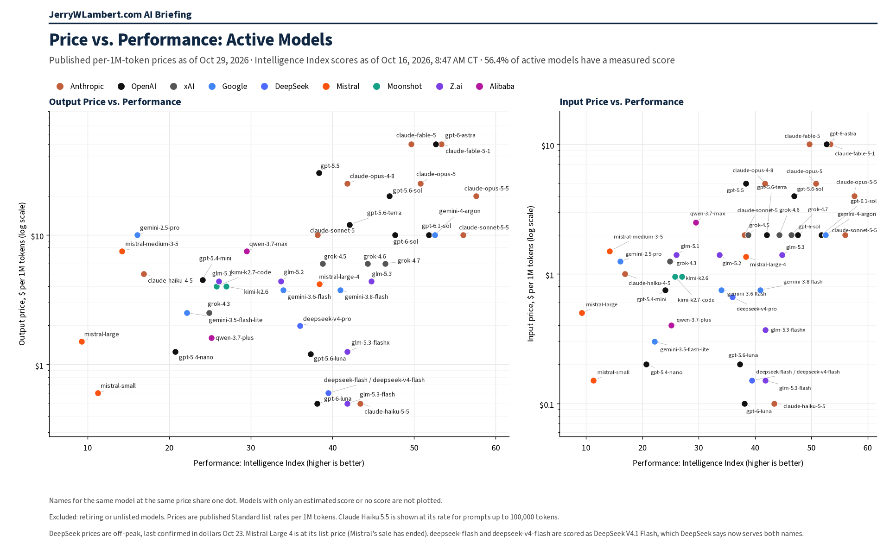

Daily Model Brief, October 29, 2026
No token price I could confirm changed since Wednesday, and no new model launched. Saturday's DeepSeek Search and Fetch billing and Moonshot's K2 cutoff for new accounts are two days out and unchanged. Google added a daily cap to Search grounding.
Download PDF SubscribeExecutive Summary
No token price changed since Wednesday's brief on any model I track at Anthropic, OpenAI, Google, xAI (Grok), DeepSeek (yuan prices), Moonshot, Z.ai, MiniMax, Mistral, Alibaba, Cohere, Meta, TypeSafe, Xiaomi, StepFun or Perplexity. None of them launched a new model overnight.
Both Saturday deadlines are two days out and unchanged this morning. At 11:00 AM CT on Saturday, October 31, DeepSeek starts billing Search and Fetch calls made through DeepSeek Harness, Claude Code and Codex. The same day, Moonshot stops letting newly registered accounts use its K2 models, and it still gives no exact retirement date beyond the end of December.
Google now lists a daily cap of 1,500 requests on Grounding with Google Search in its Gemini API price list. The price did not change: 5,000 free searches a month, shared across Gemini 3 and newer models, then $14 per 1,000.
OpenAI now lets eligible ChatGPT Pro and Business subscribers claim up to $500 a month in free API credits by linking an API organization they own (announced Wednesday, October 28). API token prices did not change.
GPT-6.1 Terra's price held again. I re-checked it this morning: gpt-6.1-terra still costs $1.00 input, $0.05 cached and $5.00 output per million tokens, half of GPT-6.1 Sol ($2.00 / $0.10 / $10.00).
Not confirmed today: Amazon and ByteDance prices, Tencent prices (last confirmed Tuesday afternoon, October 27), DeepSeek's dollar prices, Moonshot's per-search web search prices, IBM's model list, and Microsoft, which lists no pay-as-you-go prices. Their last confirmed prices stand. Performance scores in the chart are still as of October 16 and have not been refreshed since.
What This Means for Customers
- If your agents search the web through DeepSeek Harness, Claude Code or Codex, DeepSeek starts billing those Search and Fetch calls at 11:00 AM CT this Saturday, October 31, at $0.75 per 1,000 successful requests each (last confirmed dollar price). Set a budget line for it now, separate from token spend.
- If you run
kimi-k2.6orkimi-k2.7-code, plan the move off K2 before the end of December. Any Moonshot account registered from October 31 will not be able to use K2; existing accounts keep access until retirement. - If your app grounds Gemini answers with Google Search, check your daily peak against the 1,500-request daily cap Google now lists, and spread large batch jobs across days if you are near it. The cost per search is unchanged.
- If your company pays for ChatGPT Pro or Business plans and also uses the OpenAI API, check whether you qualify for up to $500 a month in API credits. You claim them by linking an API organization you own.
- If you use
gpt-6.1-sol, testgpt-6.1-terraon the same work: every token price is half. Check output quality first, and check prompt sizes, because a request over 272,000 input tokens bills entirely at the higher long-context rate. - If you still run
gpt-4.1orgpt-4.1-mini, shutdown is January 14, 2027, and the replacement isgpt-6-luna. - Claude Haiku 4.5 is still active. Anthropic lists its retirement as not sooner than October 15, 2026, a date that has passed, and still sets no date. Keep a tested fallback ready.
New Models and Price Changes
Prices in USD per 1M tokens.
| Vendor | Model ID | Status | Input | Cached | Output |
|---|---|---|---|---|---|
| OpenAI | gpt-6.1-terra | Unchanged (launched Mon Oct 26). Context window: 1,050,000 tokens. Cache writes: $1.25 (30-minute) or $2.50 (12-hour). Prompts over 272K input tokens: 2x input and cache, 1.5x output, for the whole request. | $1.00 | $0.05 | $5.00 |
| OpenAI | gpt-6.1-sol | Unchanged. Terra costs half on every line. | $2.00 | $0.10 | $10.00 |
| OpenAI | gpt-5.6-terra | Unchanged. Older model; not the same as gpt-6.1-terra. | $2.00 | $0.20 | $12.00 |
| Grounding with Google Search (Gemini 3 and newer) | New daily cap of 1,500 requests. Price unchanged: 5,000 free searches a month, then $14 per 1,000. | Per request | Not applicable | Per request | |
| Moonshot | Web search (Responses API and Kimi K3 built-in tool) | Terms unchanged since Wednesday. Billed per search the server runs, plus model tokens. Per-call prices still did not display today; not confirmed. | Per call | Not applicable | Per call |
| Moonshot | kimi-k3.1-pro | Unchanged. Cache writes: $2.00 (5-minute) or $4.00 (1-hour). | $2.00 | $0.20 | $10.00 |
| Moonshot | kimi-k3.1-pro-highspeed | Unchanged. Cache writes: $4.00 (5-minute) or $8.00 (1-hour). | $4.00 | $0.20 | $20.00 |
| Moonshot | kimi-k3 | Unchanged. | $3.00 | $0.30 | $15.00 |
| Moonshot | kimi-k2.7-code | Unchanged. Closed to new accounts from Oct 31; retiring by end of December. | $0.95 | $0.19 | $4.00 |
| Moonshot | kimi-k2.6 | Unchanged. Closed to new accounts from Oct 31; retiring by end of December. | $0.95 | $0.16 | $4.00 |
| gemini-3.8-flash (also serves gemini-3.7-flash) | Unchanged through Dec 31; $1.50 / $0.15 / $7.50 from Jan 1, 2027. | $0.75 | $0.075 | $3.75 | |
| Alibaba | qwen3.8-27b | Unchanged (International). | $0.50 | Not listed | $3.00 |
| Alibaba | qwen3.8-max | Unchanged. | $2.00 | Not listed | $6.00 |
| MiniMax | MiniMax-M3.1-Flash | Unchanged. | $0.15 | $0.015 | $0.60 |
| Mistral | mistral-large-4 | Unchanged at list price. | $1.36 | $0.14 | $4.18 |
| Meta | muse-spark-1.3 | Unchanged (Standard mode). | $1.25 | $0.15 | $4.25 |
| Cohere | Command R+ 08-2024 (legacy) | Unchanged. No cached-token price published. | $2.50 | Not listed | $10.00 |
| DeepSeek | deepseek-v4-pro | Off-peak price, last confirmed. Yuan prices unchanged today; dollar prices not confirmed today. | $0.66 | $0.022 | $1.98 |
| DeepSeek | Search API / Fetch API | Billing for calls through DeepSeek Harness, Claude Code and Codex starts Sat Oct 31, 11:00 AM CT, at $0.75 per 1,000 successful requests each (last confirmed dollar price). | Per request | Not applicable | Per request |
| Tencent | Hy3 | Last confirmed Tuesday afternoon (Oct 27). Not confirmed today. | $0.132 | $0.033 | $0.528 |
| TypeSafe | jev-1.14.0 | Unchanged. jev-latest points here. Output free. | $0.042 | Not listed | Free |
| IBM | granite-4-h-small | Last confirmed price. Not confirmed today. | $0.0636 | Not listed | $0.265 |
- No public token price changed since Wednesday's brief at any vendor I could confirm, and no new model launched.
- Google's grounding cap is a request limit, not a price change. The 5,000 free searches a month are shared across all Gemini 3 and newer models.
- Terra's long-context rule applies to the whole request: a 300,000-token prompt bills every input token at $2.00 per million, not just the tokens past 272,000.
- Prices from Amazon, ByteDance and Tencent could not be confirmed today, Moonshot's per-search prices did not display, IBM's model list could not be confirmed, and Microsoft lists no pay-as-you-go prices. Their last confirmed prices stand, unverified today.
Deprecations
| Vendor | Model ID | Shutdown (CT) | Replacement | Note |
|---|---|---|---|---|
| gemini-3.7-flash | No shutdown | gemini-3.8-flash | Google routes API requests to gemini-3.8-flash automatically, at the same price. | |
| Moonshot | kimi-k2.6 kimi-k2.7-code (all K2 models) | By end of December 2026 (no exact date) | kimi-k3.1-pro | Unchanged. Closed to newly registered accounts from Sat Oct 31; existing accounts keep access until retirement. |
| gemini-3.1-flash-tts-preview gemini-2.5-flash-preview-tts gemini-2.5-pro-preview-tts | Tue Nov 17, 2026 (time not stated) | gemini-3.8-flash-tts or gemini-3.8-flash-lite-tts | Unchanged. | |
| gemini-3.1-flash-live-preview gemini-2.5-flash-native-audio-preview-12-2025 | Tue Nov 17, 2026 (time not stated) | gemini-3.8-live | Unchanged. | |
| Microsoft (Azure) | Llama-4-Maverick-17B-128E-Instruct-FP8 | Thu Nov 19, 2026 (time not stated) | None named | Unchanged. |
| Anthropic | claude-sonnet-4-5-20250929 | Mon Nov 30, 2026 (time not stated) | claude-sonnet-5-5 | Unchanged. |
| Microsoft (Azure) | Ministral-3B mistral-medium-2505 | Wed Dec 9, 2026 (time not stated) | ministral-ministral-4b-instruct mistral-medium-3-5 | Unchanged. Applies to Azure deployments, not Mistral's own API. |
| OpenAI | gpt-5 gpt-5-mini gpt-5-nano gpt-5-pro o3 o3-pro (dated snapshots) | Fri Dec 11, 2026 (time not stated) | gpt-5.6-sol gpt-5.6-terra gpt-5.6-luna | Unchanged (announced June 11, 2026). gpt-5 and o3 move to gpt-5.6-sol, gpt-5-mini to gpt-5.6-terra, gpt-5-nano to gpt-5.6-luna, and gpt-5-pro and o3-pro to gpt-5.6-sol in pro reasoning mode. |
| OpenAI | gpt-4.1 gpt-4.1-mini gpt-4o-2024-08-06 gpt-4o-2024-11-20 gpt-4o-mini-2024-07-18 | Wed Jan 13, 2027, 6:00 PM CT | gpt-6-luna | Unchanged. OpenAI lists Jan 14, 2027 with no time; 6:00 PM CT Jan 13 is 00:00 UTC Jan 14. |
| Microsoft (Azure) | Llama-3.3-70B-Instruct | Sun Jan 31, 2027 (time not stated) | None named | Unchanged. |
| Microsoft (Azure) | cohere-command-a mistral-small-2503 | Mon Feb 15, 2027 (time not stated) | Cohere-command-a-plus-05-2026 mistralai-mistral-small-4-119b-2603 | Unchanged. |
| OpenAI | gpt-5.4-nano gpt-5.4-nano-2026-03-17 | Thu Apr 1, 2027 (time not stated) | gpt-6-luna | Unchanged. Also retiring that day: gpt-5.3-codex and gpt-5.1, with gpt-6-sol as their replacement. |
| Microsoft (Azure) | Kimi-K2.6 Kimi-K2.7-Code | Fri Apr 16, 2027 (time not stated) | None named | Unchanged. Azure's date is later than Moonshot's own K2 retirement. |
| Microsoft (Azure) | embed-v-4-0 | Tue Jun 1, 2027 (time not stated) | Cohere-embed-v5-fast, Cohere-embed-v5-pro | Unchanged. |
| Microsoft (Azure) | Cohere-rerank-v4.0-fast Cohere-rerank-v4.0-pro | Mon Sep 13, 2027 (time not stated) | Cohere-rerank-v5-fast Cohere-rerank-v5-pro | Unchanged. |
| Microsoft (Azure) | gpt-oss-120b | Wed Sep 15, 2027 (time not stated) | None named | Unchanged. |
| Microsoft (Azure) | DeepSeek-V3.2 DeepSeek-V3.2-Speciale | Mon Nov 1, 2027 (time not stated) | DeepSeek-V4.1-Flash DeepSeek-V4-Pro | Unchanged. |
| Anthropic | claude-haiku-4-5-20251001 | Not sooner than Thu Oct 15, 2026; no date set | None named | Watch item. Still active with no date set. |
| Cohere | command-r command-r-plus | Deprecated Sep 15, 2025; no shutdown date set | command-r-08-2024 command-r-plus-08-2024 command-a-03-2025 | Closed to new customers; existing users keep access until retirement. |
- No new retirement and no moved shutdown date since Wednesday's brief at any vendor I track.
- OpenAI's transcription notice is unchanged: whisper-1, gpt-4o-transcribe, gpt-4o-mini-transcribe, gpt-4o-transcribe-diarize and the /v1/audio/translations endpoint shut down February 26, 2027.
- Moonshot still gives a month, not a day, for the K2 retirement, so treat December 1 as the safe planning date.
Price Tracker
Shares of the full tracked population.
- Tracked models: 1,934 (count as of October 25).
- Audited pricing, confirmed against the vendor's own published prices: 13.1% of the full tracked population.
- Unaudited pricing: 5.3%.
- The rest have no public per-token price (47.6%: self-hosted open weights, retired or unpublished) or are duplicate listings of another tracked model (34.0%).
Agent Platforms
Hosted AI agents that come with their own persistent cloud computer.
- Grok Bot (xAI): its own persistent cloud computer. On the X Subscription it is included on Premium, Super and Ultra, draws from the same weekly usage pool as Cursor and the Grok apps, and prepaid credit covers usage past the pool. New since Wednesday morning: release v0.78.1 (dated October 27) shows shopping results as product cards, where Buy now starts an order you approve, adds Shop Pay in the Vault's Payments tab, and adds templates that cancel a free trial before it bills, find unused subscriptions and watch renewal prices. Where it offered a free trial, it now offers a unified plan. No plan price change.
- dots (OpenAI): not verified today. Last confirmed: a dot "has its own cloud computer," and the first comes with Pro and Business Premium at no extra cost.
- Muse (Meta): "You and your Muse share your own dedicated computer in the cloud." Runs on Muse Spark 1.3, whose API price is unchanged at $1.25 input, $0.15 cached and $4.25 output per million tokens. Billing is unverified today.
- Manus: the Cloud Computer add-on is a persistent server billed separately at $30 a month (2 vCPUs, 4 GB RAM, 70 GB storage) or $50 a month (2 vCPUs, 8 GB RAM, 120 GB storage). No change.
- Genspark Claw: runs "on a dedicated cloud computer provisioned just for you," which requires a Lite, Standard or Powerful Cloud Computer subscription; Genspark publishes no dollar amounts. No price change.
Model Size vs. Price

Among active models with a known parameter count (23.1% of active models), price rises with total size (rank correlation 0.62 on output price). Anthropic, OpenAI, xAI and Google publish no parameter counts, so their models are not plotted. No plotted price changed since Wednesday. Prices as of October 29, 2026.
Price vs. Performance

Among active models with a performance score (56.4% of active models), price rises with performance only loosely (rank correlation 0.49 on output price). Claude Haiku 5.5 leads at $0.50 or less (43.4). At the frontier, Gemini 4 Argon scores 52.6 and GPT-6.1 Sol 51.8, each at $10 output, while xAI's Grok 4.7 scores 46.5 at $6. Scores as of October 16, 2026 (not refreshed since); prices as of October 29, 2026.
All times Central. Vendor prices, dates and model IDs are as of 8:55 AM CT on October 29, 2026. Chart prices are as of October 29, 2026. Performance scores are as of October 16, 2026 and have not been refreshed since. Price Tracker percentages are shares of the full tracked population; chart percentages are shares of active models. Items that could not be confirmed are marked unverified.